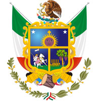

El territorio que hoy ocupa el Estado de Querétaro fue habitado por otomíes y purépechas, siendo estos últimos los dominantes. Había también una pequeña presencia de tribus nómadas llamadas chichimecas (pames y jonaces). Hay algunos sitios arqueológicos que datan de este tiempo como El Cerrito en Corregidora, y los sitios de Ranas y Toluquilla en la Sierra Gorda. Este Estado fue habitado en 1446 por indígenas otomíes y tarascos, convirtiéndose en los dominios del señor de los purépechas. La tradición menciona que el 25 de julio de 1531 se fundó Querétaro con la llegada de los españoles al mando de Hernán Pérez Bocanegra y Córdoba, en una alianza con el indígena otomí Conín que era el cacique de Jilotepec. A la entrada de la ciudad se encuentra el monumento a este cacique otomí en piedra de cantera negra dando la bienvenida a sus visitantes. La ubicación fue elegida tomando en cuenta el lugar donde el 23 de julio de 1531 Conin organizó a su ejército para entrevistarse con los capitanes Lobo y Coyote de las fuerzas chichimecas que se oponían al avance de la colonización. Aunque en el territorio queretano se han encontrado rastros de pobladores olmecas y huastecos, las huellas nativas más recientes fueron de chichimecas, otomís – que llamaban a estas tierras el lugar de las Peñas Grandes- y purépechas- que las conocían como el Lugar del Juego de Pelota. A la llegada de los españoles, solamente los pames y los jonaces – ambos grupos chichimecas- opusieron resistencia a la ocupación. Las otras tribus indígenas aceptaron de buen grado participar en las empresas materiales y espirituales que iniciaban los conquistadores en esta región. Poco a poco se construyeron puestos de vigía y presidios en la Ruta de la Plata, que cruzaban las entonces llamadas Provincias Internas de Querétaro, Cadereyta y Escanela. A lo largo de este camino fueron creciendo poblados y ciudades: primero fueron ventas para el descanso de las capitanías que resguardaban los cargamentos de metal, luego aparecieron el comercio y las haciendas de beneficio con sus imprescindibles capillas o iglesias y, desde luego, las misiones para el adoctrinamiento religioso. Poco después de la Guerra de Independencia, en 1824, con la República ya establecida, fue erigido Estado. Aquí en 1848 el Congreso de la Unión se vio obligado a ceder a Estados Unidos la mitad del territorio nacional. En 1867, un fugaz emperador, Maximiliano I, perdió su última batalla. Y a principios del siglo XX se promulgó la Constitución que rige a todos los mexicanos. Hoy, con el mismo afán que en el pasado, los 18 municipios de Querétaro trabajan para avanzar en la modernidad y asegurarse un futuro promisorio. El Estado de Querétaro se distingue por tener climas no extremos, los cuales son muy benignos para la agricultura. Por la geografía del Estado varios municipios del mismo poseen varios tipos de climas diferentes y van desde los más secos a los más húmedos. Querétaro es actualmente uno de los Estados con mayor crecimiento en la inversión nacional y extranjera que recibe. Su localización centralizada con vías de transporte eficientes lo convierten en uno de los corredores logísticos más importantes del país, además de ser atractivo por la seguridad que aún se percibe en la capital y otros municipios del Estado. Querétaro es importante foco receptor de inversión proveniente de Canadá, Francia, Alemania, Estados Unidos y Japón, entre otros. La multiculturalidad del Estado además lo sitúa como uno de los más desarrollados y turísticos; sin mencionar el crecimiento exponencial que ha experimentado en los últimos años (debido a la inversión extranjera y nacional), edificios, centros comerciales, puentes, casas, colonias, proyectos habitacionales, fábricas, bodegas logísticas, etc. El Estado de Querétaro cuenta con una gastronomía muy peculiar, basada en los productos típicos del semidesierto, las actividades agrícolas y ganaderas de la región, y su herencia virreinal. Predominan ingredientes prehispánicos como el maíz, el chile, las frutas y las cactáceas. La gastronomía queretana está ligada a las fiestas cívicas y tradiciones religiosas, ya que en ella se cuenta con la oportunidad de apreciar la magnificencia de la cocina. Durante estas celebraciones se puede degustar de estos platillos en las calles del centro de Querétaro, ya que para visitantes y queretanos están las verbenas populares, donde se ofrecen platos fuertes, bebidas, postres o simplemente un antojito. La cocina queretana con su riqueza, variedad y presencia forma parte del patrimonio gastronómico nacional. Actualmente, en cada municipio del Estado se realizan ferias populares en las que se pueden saborear platillos típicos de la región, como tacos paseados, camote acicalado, aguas frescas, puchero acompañado con tortillas de colores, arroz con granada, pan de huevo o de pulque, enchiladas y guacamole queretano, gorditas de maíz martajado rellenas de migajas o de queso, charales, revoltillo; capirotado y buñuelos con miel de piloncillo y guayaba entre otros.
